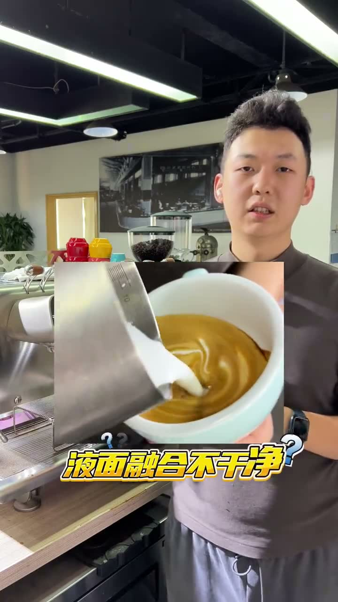
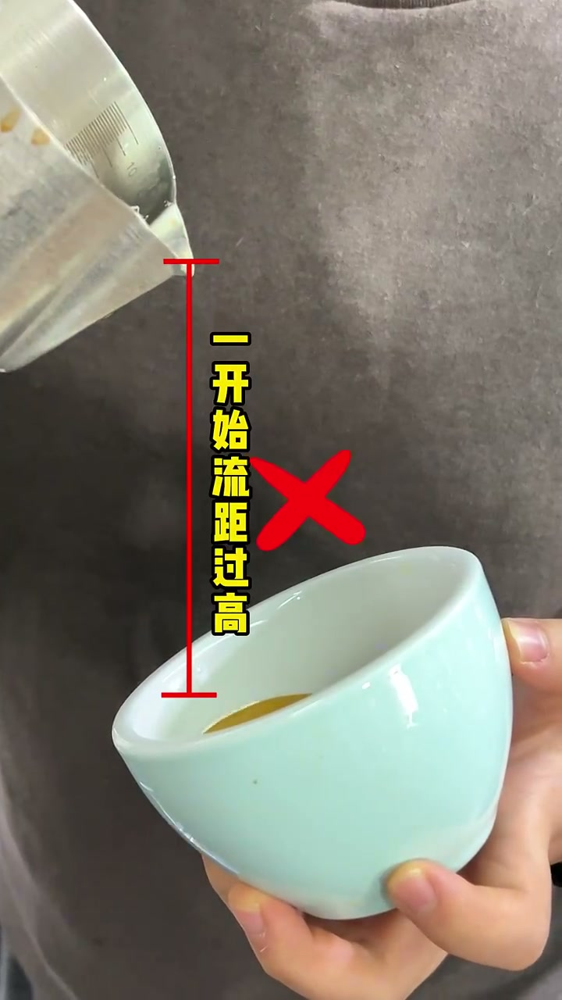
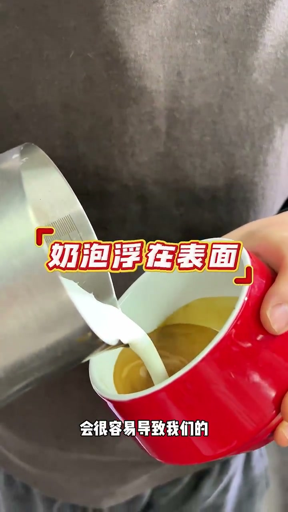

液面不干净，怎么办？掌握好这点轻松解决！
查看原视频 English Version核心要点
- 液面在拉花前就脏了 = 融合阶段的流距（倒奶高度）不对
- 过高：冲击力击穿液面 → 反白发白
- 过低：奶泡浮在表面 → 出现白点，转圈时拉成白丝
- 正确做法：由低到高的渐进式融合——先低注入稳定液面，再逐渐拉高
错误一：流距过高
一开始就用很高的流距直接注入，冲击力太强，击穿液面。结果是整个杯中液面反白——还没拉花就已经脏了。

错误二：流距过低
奶泡浮在表面无法融入咖啡，留下白点。持续融合转圈时，这些白点被拉长变成一条条的白丝。液面看起来不干净，充满白色线条。

正确做法：由低到高渐进融合
先低位注入，让奶泡进入咖啡下方，稳定液面。然后逐渐拉高流距，进行高流距融合。这样既能充分混合，又不会破坏液面。

记住流程：低注入稳定 → 逐渐拉高 → 高流距融合清洁液面 → 开始拉花
详细文字转录（34段）
以下内容按 Whisper 原始分段完整呈现，可能包含识别误差。
- [00:00]好的小伙伴后来私信说
- [00:02]为什么我拉花还没有出土的时候
- [00:05]它叶面就已经脏脏的了
- [00:07]有很大一部分原因是
- [00:09]由于我们的融合时候的流距导致的
- [00:11]过高或者过电流质
- [00:14]都会导致我们的叶面拉丝不干净
- [00:16]首先我们在融合的时候
- [00:18]是需要一个较高的一个流距来进行融合的
- [00:21]但是又不能一开始
- [00:23]立马用一个很高的流距直接注入
- [00:25]直接注入的话会导致它的流距过高
- [00:28]冲击力较强
- [00:30]很容易滴穿我们的叶面
- [00:32]导致我们的整体的一个杯中叶面反白
- [00:34]过低的流距
- [00:37]会很容易导致我们的奶泡浮在表面
- [00:39]出现白点
- [00:41]在我们持续融合转圈的时候
- [00:44]让白点拉长变成一条条的白丝
- [00:46]就是因为我们融合过低导致的
- [00:48]所以我们其实在正常融合
- [00:50]是需要一个由低到高的一个融合过程的
- [00:53]在注入的时候
- [00:55]我们需要一个较低的一个注入点注入进去
- [00:57]首先是我们的叶面稳定
- [01:00]再逐渐的拉高进行一个高流距的一个融合
- [01:02]这样我们才能够融合干净
- [01:04]从我们今天的学习
- [01:07]我们可以了解到过高的流距和过低的流距
- [01:09]都会对我们的融合有一个比较明显的影响
- [01:11]让我们去注意到这两点的时候
- [01:13]是非常容易可以得到一杯干净的叶面
- [01:16]在进行我们的拉花创作了